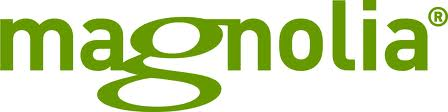
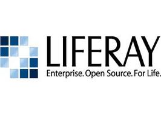
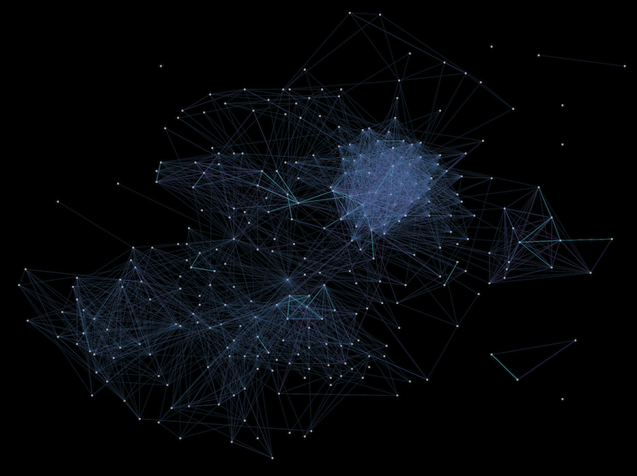

Combining Open Source and agile delivery
Rory Gibson
Free Software
Stereotypical Open Source contributor
Real open source contributors


Working together

Collaboration
col·lab·o·rate
to work jointly with others or together especially in an intellectual endeavor